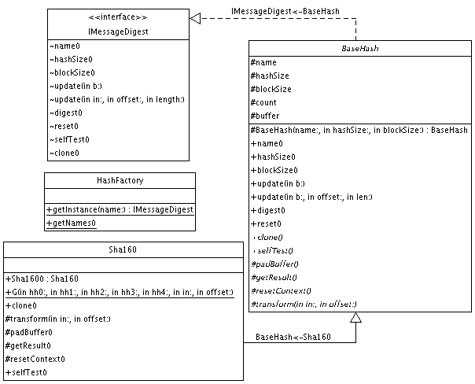

|
For the latest news and information visit The GNU Crypto project |
|||||||||
| PREV PACKAGE NEXT PACKAGE | FRAMES NO FRAMES | |||||||||
See:
Description
| Interface Summary | |
| IMessageDigest | The basic visible methods of any hash algorithm. |
| Class Summary | |
| BaseHash | A base abstract class to facilitate hash implementations. |
| HashFactory | A Factory to instantiate message digest algorithm instances. |
| MD2 | An implementation of the MD2 message digest algorithm. |
| MD4 | An implementation of Ron Rivest's MD4 message digest algorithm. |
| MD5 | The MD5 message-digest algorithm takes as input a message of arbitrary length and produces as output a 128-bit "fingerprint" or "message digest" of the input. |
| RipeMD128 | RIPEMD-128 is a 128-bit message digest. |
| RipeMD160 | RIPEMD-160 is a 160-bit message digest. |
| Sha160 | The Secure Hash Algorithm (SHA-1) is required for use with the Digital Signature Algorithm (DSA) as specified in the Digital Signature Standard (DSS) and whenever a secure hash algorithm is required for federal applications. |
| Tiger | The Tiger message digest. |
| Whirlpool | Whirlpool, a new 512-bit hashing function operating on messages less than 2 ** 256 bits in length. |
Provides a basic API for using message digest algorithms.
Message digests, or one-way hash functions, generate fixed-sized signatures from variable-sized texts, in such a way that it is computationally infeasible to determine the source text from the signature or to find a different text that hashes to the same signature.
The following diagram shows the important classes participating in this package:

Here is a simple example of how to use the SHA-1 hash.
IMessageDigest md = HashFactory.getInstance("SHA-1");
md.update(input, 0, input.length);
byte[] digest = md.digest();
|
For the latest news and information visit The GNU Crypto project |
|||||||||
| PREV PACKAGE NEXT PACKAGE | FRAMES NO FRAMES | |||||||||